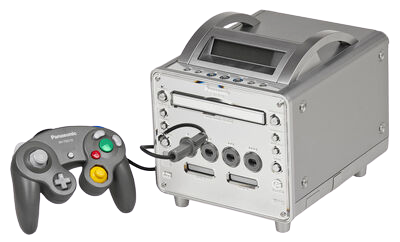
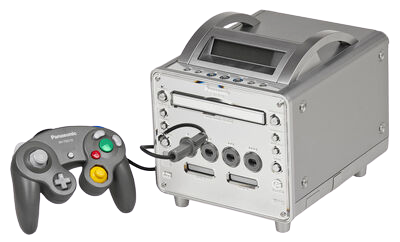

Dreamcast
- Concepteur : Sega
- Fabricant : Sega
- Début de commercialisation :
- Japon - 1998
- Etats-Unis - 1999
- Europe - 1999
- Fin de production - 2004
- Ventes de la console (en unités) :
- Monde - 10.6 millions
- Japon - 2.25 millions
- Etats-Unis - 3.90 millions
- Europe - 1.91 millions
- Nombre de titres sortis - NC
- Ventes de jeux - NC
- Meilleure vente de jeu - Sonic Adventures (2.5 millions d'unités vendues)
- Dreamcast - Edward
- Dreamcast - Conkerax
Sa petite histoire...
La Dreamcast est la première console de sixième génération précédant la PlayStation 2 de Sony, la GameCube de Nintendo et la Xbox de Microsoft. Elle
est aussi la dernière console de Sega, marquant la fin de dix-huit années de présence de l'entreprise sur le marché du jeu vidéo.
Contrairement au matériel coûteux de la Sega Saturn, la Dreamcast est conçue sur la réduction de coûts avec des composants standards. Sortie au Japon
avec un accueil pour le moins... - bruit du vent...-, la Dreamcast connut à contrario un lancement américain et européen réussi, soutenu par une vaste
campagne de marketing, mais l'intérêt pour la Dreamcast cessa lorsque Sony construisit un battage médiatique autour de la prochaine PlayStation 2.
Les ventes ne répondent pas aux attentes de Sega malgré plusieurs baisses de prix, et la société continue de subir des pertes financières importantes.
Après un changement de direction, Sega cesse la vente de la Dreamcast le 31 mars 2001, se retire de l'activité console et se restructure en tant
qu'éditeur indépendant. Bien que la Dreamcast ait une courte durée de vie et un support de développeurs tiers limité, la console est considérée en
avance sur son temps. Sa bibliothèque contient de nombreux jeux créatifs et innovants, notamment
, ainsi que des portages de haute qualité venus de l'arcade. La Dreamcast est également la première console à inclure un modem intégré pour le support Internet et le jeu en ligne.
Lancement...
La Sega Mega Drive est la console Sega la plus aboutie jamais commercialisée. Son successeur, la Sega Saturn est une console CD-ROM affichant des
graphiques 2D et 3D, mais son architecture complexe à double processeur rende la programmation plus difficile que son principal concurrent, la Sony
PlayStation. Le succès de Sony est gagné sur une guerre des prix dans laquelle Sega abaisse le prix de la Saturn à plusieurs reprises et les pertes
sur le matériel Saturn contribuent aux problèmes financiers de Sega.
Bernie Stolar, un ancien cadre de Sony, est nommé vice-président exécutif de Sega of America en charge du développement de produits et des relations
avec les développeurs indépendants au début des années 90. Stolar ne prend pas en charge la Saturn en raison de sa conviction que le matériel est mal
conçu et annonce publiquement à l'E3 1997 que
❝la Saturn n'est pas notre avenir❠
.
Stolar accède par la suite au poste de PDG. L'abandon de la Saturn, dans le but de préparer le lancement de son successeur, laisse le marché
occidental sans jeux Sega pendant plus d'un an.
À la lumière des mauvaises performances de ventes de la Saturn, Shoichiro Irimajiri cherche, en marge de la division de développement interne de
l'entreprise, à créer une nouvelle console. Irimajiri fait appel en 1997 aux services de Tatsuo Yamamoto d'IBM pour diriger une équipe de 11
personnes afin de travailler sur un projet secret aux États-Unis, appelé Blackbelt, en créant 3dfx - une compagnie spécialisée dans la
production de cartes graphiques 3D achetée en 2000 par NVidia pour 105 millions d'€ -.
Une équipe interne, dirigée par Hideki Sato, commence également le développement sur le matériel Dreamcast. Sega charge les deux équipes à inventer
cette nouvelle console chacun de son côté, car Sato est dérangé par le choix d'Irimajiri de commencer le développement en externe. 3dfx fait son
introduction en bourse cette même année et, en raison d'obligations légales, dévoile ses contrats avec Sega, y compris le développement de la
nouvelle console. Cela courrouce les dirigeants de Sega, qui décide finalement de couper les liens avec 3dfx. Celle-ci intente une action contre Sega
et NEC pour violation de contrat, mais finissent par s'arranger à l'amiable.
Sachant que la Saturn a pris du retard par ses coûts de production élevés et son matériel complexe, Sega adopte cette fois-ci une approche différente
avec la Dreamcast. Les sélections de matériel sont plus conformes à ce qui est courant dans les ordinateurs que dans les consoles de jeux vidéo,
réduisant ainsi le coût du système. L'économiste chinois et futur PDG de Sega.com, Brad Huang, convainc le président Isao Okawa d'inclure un modem
avec chaque Dreamcast, malgré l'opposition significative du personnel d'Okawa au sujet du coût indû.
Sega choisit le format de support GD-ROM. Le GD-ROM, développé conjointement
par Sega et Yamaha Corporation, peut être produit en série à un prix similaire à un CD-ROM normal tout en évitant de payer les droits de la
technologie DVD-ROM. Comme le format GD-ROM peut contenir environ 1 Go de données, la copie illégale de jeux Dreamcast sur un CD-ROM de 650 Mo
nécessite parfois la suppression de certaines fonctionnalités du jeu, bien que cela n'empêche en rien la copie du logiciel Dreamcast.
Sega organise un concours public pour nommer son nouveau système et examine plus de 5 000 propositions différentes avant de choisir
Dreamcast. Le son de démarrage est composé par le musicien japonais Ryuichi Sakamoto. Comme la Saturn a terni la réputation de Sega, la
société pense retirer complètement son nom de la console et d'établir une nouvelle marque de jeu similaire à la PlayStation de Sony, mais l'équipe de
direction d'Irimajiri décide de conserver le logo de Sega à l'extérieur de la Dreamcast.
Houlala, ça part en sucette...
La Dreamcast suscite un intérêt considérable et attire de nombreuses précommandes. Sega annonce que "Sonic Adventure", le prochain jeu avec la
mascotte Sonic the Hedgehog, arriverait à temps pour le lancement de la Dreamcast et fait la promotion du jeu avec une démonstration publique à grande
échelle au Tokyo Kokusai Forum Hall - Le centre d'exposition principal de Tyoko tout comme le parc des expositions de la porte de Versailles
et sa foire de Paris -. Cependant, Sega n'atteint pas ses objectifs d'expédition pour le lancement japonais en raison d'une pénurie de
chipsets PowerVR causée par un taux d'échec élevé dans le processus
de fabrication.
Le lancement de la Dreamcast se fait au japon le 27 novembre 98 et tout le stock se vend en une journée. Cependant, sur les quatre jeux disponibles au
lancement, un seul s'est bien vendu - un portage de
Virtua Fighter 3, le jeu d'arcade le plus réussi que Sega n'ait
jamais sorti —. Les jeux clés "Sega Sonic Adventure" et
Sega Rally Championship 2 arrivent dans les semaines
suivantes, mais les ventes continuent à être plus lentes que prévu. Irimajiri espére vendre plus d'un million d'unités au Japon en quatre mois, mais
moins de 900 000 unités s'écoulent, sapant les tentatives de Sega de se constituer une base installée suffisante pour assurer la survie de la
Dreamcast après l'arrivée de la concurrence d'autres fabricants.
Avant la sortie de la Dreamcast, Sega subit déjà un coup dur quand
Electronic Arts, le plus grand éditeur de jeux vidéo, annonce qu'il ne
développerait plus de jeux pour Sega. Le petit différent tient à ce que le chef de la création d'EA, Bing Gordon voulut négocier un droit exclusif sur
les jeux de sport de la Dreamcast, ce que Bernie Stolar n'a pu accepter en raison de l'achat récent par Sega à 8.5 millions d'€ du développeur de jeux
sportifs Visual Concepts. Bien que la série
Madden NFL d'EA soit une marque bien établie, Stolar considère le "NFL
2K" comme bien supérieur et offrant une expérience révolutionnaire pour lancer la console. Alors que la Dreamcast n'aurait aucun des jeux de sport
populaires d'EA, les jeux Sega Sports aident à combler ce vide.
Travaillant en étroite collaboration avec Midway Games et profitant des dix
mois de sortie de la Dreamcast au Japon, Sega of America essaie d'assurer un lancement américain plus réussi avec un minimum de 15 jeux. Malgré
l'amertume persistante à propos de la sortie anticipée de Saturn, Stolar réussit à rétablir des relations avec les principaux détaillants américains.
Sega doit créer quelque chose qui intriguerait vraiment les consommateurs, présenter des excuses pour le passé, et évoquer toutes les choses de bien
chez Sega, principalement depuis l'époque de la Mega Drive. Dix-huit jeux de lancement sont disponibles pour la Dreamcast aux États-Unis, Sega établit
au passage un nouveau record de ventes en vendant plus de 225 132 unités Dreamcast en 24 heures, ce qui lui rapporte 83 millions d'€ pour ce que Moore
appelle
❝les 24 heures les plus importantes de l'histoire de la vente au détail de divertissement❠
.
Moore ? Oui, en fait Stolar s'est fait virer peu de temps avant le lancement de la Dreamcast aux USA. Les jeux de lancement comprennent
Soul Calibur et la simulation de football
NFL 2K.
Okawa remplace Irimajiri à la présidence de Sega le 22 mai 2000. Okawa a longtemps préconisé que Sega abandonne le commerce des consoles. Son
sentiment n'est pas unique, le co-fondateur de Sega, David Rosen, a
❝toujours pensé que c'est un peu une folie pour eux de limiter leur potentiel au matériel Sega❠
,
et Stolar suggéra à une époque que Sega aurait dû vendre leur entreprise à Microsoft.
Lors d'une réunion avec les dirigeants japonais de Sega et les dirigeants des principaux studios de développement de jeux japonais de la société en
septembre 2000, Moore et Bellfield recommandent à Sega d'abandonner son activité de consoles et de se concentrer sur les logiciels. Sega annonce
l'arrêt de la Dreamcast après le 31 mars 2001 et la restructuration de la société en tant que développeur tiers indépendant. Okawa, qui a déjà prêté
420 millions d'€ à Sega à l'été 99, décède le 16 mars 2001. Peu de temps avant sa mort, il éponge les dettes de Sega et rend ses 585 millions d'€
d'actions Sega et CSK, aidant l'entreprise à survivre à la transition. Dans le cadre de cette restructuration, près d'un tiers des effectifs à Tokyo
sont licenciés. Après l'arrêt de la Dreamcast, des jeux sont encore développés et commercialisés pour le système, en particulier au Japon. Après cinq
années consécutives de pertes financières, Sega affichera un bénéfice pour l'année 2003.
Les raisons de l'échec de la Dreamcast incluent le battage médiatique pour la PS2, un manque de soutien d'EA et
Squaresoft, considérés respectivement comme les développeurs tiers les plus
populaires aux États-Unis et au Japon, un désaccord parmi les dirigeants de Sega sur l'avenir de l'entreprise et le manque d'engagement d'Okawa envers
le produit. Les dommages causés à la réputation de Sega ne datent pas de la Dreamcast, mais causés par plusieurs précédentes plateformes mal prises en
charge. La console eut ainsi du mal à perdre la réputation négative que Sega acquiert pendant les périodes Saturn, Sega 32X et Sega CD. Joueurs et
développeurs blasés sont devenus méfiants envers les nouvelles consoles portant la marque Sega. De nombreux consommateurs se sont sentis floués
après avoir investi dans des machines coûteuses et constatés que les bibliothèques résultantes manquaient d'un catalogue étoffé. Sega est une
entreprise créative, fertile et semble dès lors en position idéale pour commencer une nouvelle vie en tant que développeur/éditeur. Ses développeurs
de classe mondiale peuvent faire ce qu'ils font de mieux pour n'importe quelle machine sur le marché.
GameCube
- Concepteur : Nintendo en association avec IBM, NEC et ATI - producteur de microprocesseurs pour cartes graphiques et chipsets
- Fabricant : Nintendo
- Début de commercialisation :
- Japon - 2001
- Etats-Unis - 2001
- Europe - 2002
- Fin de production - 2007
- Ventes de la console (en unités) :
- Monde - 21.74 millions
- Japon - 4.04 millions
- Etats-Unis - 12.94 millions
- Europe - 4.77 millions
- Nombre de titres sortis - 644
- Ventes de jeux - NC
- Meilleure vente de jeu - Super Smash Bros. Melee (7.07 millions)
- GameCube - Edward
- GameCube - Modern Vintage Player
 

Sa petite histoire...
La Nintendo GameCube est le successeur de la Nintendo 64, en concurrence avec la PlayStation 2 de Sony et la Xbox de Microsoft. La GameCube est la
première console Nintendo à utiliser des disques optiques comme support de stockage principal. Les disques sont au format miniDVD et le système n'est
pas conçu pour lire des DVD ou des CD audio de taille normale contrairement à ses rivaux, et se concentre uniquement sur les jeux.
La console prend en charge les jeux en ligne via un adaptateur haut débit ou un modem GameCube et se connecte à un
Game Boy Advance par câble, ce qui permet aux utilisateurs
d'accéder à des fonctionnalités exclusives du jeu en utilisant la Game Boy comme deuxième écran et manette. La GameCube a mis à jour le
firmware désactivant l'Action Replay et les codes de triche et c'est
chiant ! La console est reconnue pour sa manette originale, sa vaste bibliothèque de logiciels et ses jeux de haute qualité, mais est critiquée pour
son design extérieur et son manque de fonctionnalités.
Lancement...
En partenariat avec Nintendo, ArtX - spécialisée dans la création de matériel graphique - est engagé pour créer la logique du système et le processeur
graphique - code Flipper - de la GameCube. Lors de la conférence de presse de Nintendo en mai 99, la console est d'abord annoncée sous le nom
de Project Dolphin. Puis Nintendo commence à fournir des kits aux développeurs tels que
Rare et
Retro Studios. Nintendo forme un partenariat stratégique avec IBM, qui crée
le processeur du Dclphin nommé Gekko. ArtX est acquis par ATI en avril 2000, mais achèvera néanmoins la conception du processeur graphique.
La console est annoncée comme étant la GameCube lors d'une conférence de presse au Japon le 25 août 2000. Nintendo dévoile sa gamme de logiciels à
l'E3 2001, en se concentrant sur quinze jeux de lancement, y compris
Luigi's Mansion et
Star Wars Rogue Squadron II : Rogue Leader. C'est également
la première console Nintendo depuis la Famicom à ne pas être accompagné d'un jeu de plateforme Super Mario au lancement.
Avant la sortie de la GameCube, Nintendo concentre ses ressources sur le lancement de la Game Boy Advance, une console de jeu portable et successeur
de la Game Boy et de la
Game Boy Color. Plusieurs jeux destinés à l'origine à la N64 sont
reportés au profit de leur sortie anticipée sur GameCube. Simultanément, Nintendo développe un logiciel qui fournit une connectivité entre elle et la
Game Boy Advance. Certains jeux, comme
The Legend of Zelda : Four Swords Adventures et
Final Fantasy Crystal Chronicles, peuvent utiliser
la Game Boy comme écran secondaire et contrôleur lorsqu'ils sont connectés à la console. Ce néo-principe trouvera sa quintessence lors de la
création de la Switch.
Nintendo commence sa campagne de marketing avec le slogan The Nintendo Difference lors de sa révélation de l'E3 2001 : le but est de se
distinguer de la concurrence en tant qu'entreprise de divertissement. Les publicités ont le slogan Born to Play et les annonces de jeux
présentent une animation de cube rotatif qui se transforme en logo GameCube avec
divers effets sonores. Pourtant, malgré ses excellents jeux,
la GameCube ne rencontre pas le succès de ses devancières.
Porte bien son nom, cette GameCube...
Semblable physiquement à un cube doté d'une anse pour évoquer la facilité du transport, la console utilise un support de stockage unique nommé
Nintendo Game Cube Optical Disc. Créé en collaboration avec
Matsushita - aujourd'hui Panasonic -, le disque est grandement inspiré du
DVD avec un plugin spécial pour éviter la copie. Nintendo choisit ce mini format de 8 centimètres pour éviter les longs temps de chargement présents
dans les jeux des consoles concurrentes.
La GameCube est la console la plus petite de cette sixième génération et est dessinée par Kenishiro Ashida qui veut, en lui donnant ce design, créer
un objet compact et innovant. De base, la GameCube est de couleur indigo, même si par la suite Nintendo sortit de nouveaux coloris pour mettre fin aux
critiques de ses détracteurs qui considérent le bleu-violet comme une couleur enfantine. La machine est également sortie en noir et en argenté -
platinium - ou dans des couleurs en éditions limitées comme le blanc cristal pour Final Fantasy: Crystal Chronicles, Mint Green pour
Tales of Symphonia, cuivre pour "Char Aznable from Gundam", gris
métallisé et noir pour Resident Evil 4 et blanc avec des rayures
noires pour "The Hanshin Tigers".
Il existe une version spéciale de la console permettant de lire les DVD. Cette machine, dénommée
Q, est développée par Panasonic uniquement pour le marché japonais. La platine DVD
est d'ailleurs zonée, ne permettant pas de lire des DVD autres que ceux du Japon. Elle est livrée avec une télécommande et ses dimensions sont un peu
plus importantes que la GameCube de Nintendo. Une version du
Game Boy Player est spécifiquement conçue pour s'adapter au format
de cette console. De couleur argentée, elle posséde également un petit écran LCD affichant diverses informations sur les DVD ou CD. La manette donnée
avec est estampillée Panasonic, au lieu du logo Nintendo Gamecube habituel.
PlayStation 2
- Concepteur : Ken Kutaragi
- Fabricant : Sony Computer Entertainment
- Début de commercialisation :
- Japon - 2000
- Etats-Unis - 2000
- Europe - 2000
- Fin de production - 2013
- Ventes de la console (en unités) :
- Monde - 157.68 millions
- Japon - 23.18 millions
- Etats-Unis - 53.65 millions
- Europe - 55.28 millions
- Nombre de titres sortis - 3800
- Ventes de jeux - 1.5 milliards
- Meilleure vente de jeu - Grand Theft Auto : San Andreas (20.81 millions)
- PlayStation 2 - Edward
- PlayStation 2 - Conkerax
Sa petite histoire...
La PS2 est la console la plus vendue de tous les temps avec plus de 155 millions d'unités écoulées dans le monde. Plus de 3 800 titres sont commercialisés, avec plus de 1,5 milliard de copies vendues. Sony fabrique plusieurs versions plus petites et plus légères de la console à partir de 2004 connue sous le nom de modèles SlimLine. La PS2 offre une compatibilité pour la DualShock de son prédécesseur ainsi que pour ses jeux. Même avec la sortie de son successeur, la PlayStation 3, la PS2 reste populaire jusqu'à la septième génération et continue à être produite jusqu'en 2013 jusqu'à ce que Sony annonce finalement son abandon après douze ans de production - l'une des plus longue durée de vie d'une console -. Malgré cette annonce, de nouveaux jeux pour la console continuent à être produits jusqu'à la fin de 2013, notamment
- Final Fantasy XI: Seekers of Adoulin pour le Japon
- FIFA 13 pour les Etats-Unis
- Pro Evolution Soccer 2014 pour l'Europe
Les services de réparation du système au Japon prennent fin le 7 septembre 2018. C'est vraiment la console de tous les records.
Lancement...
Bien que Sony garde secret les détails du développement de la PlayStation 2, le travail sur la console commence à peu près au moment de la sortie de
la PlayStation originale, fin 1994. Elle est développée sur la côte ouest des États-Unis par d'anciens membres d'
Argonaut Software. Sony annonce la sortie de la PlayStation 2 le 1er
mars 1999 comprenant une rétrocompatibilité avec la Playstation, un lecteur DVD et une connectivité internet.
La console se positionne comme un concurrent de la Dreamcast de Sega, bien que ses principaux rivaux furent la GameCube de Nintendo et la Xbox de
Microsoft. Peu après le lancement nord-américain de Dreamcast, Sony dévoile la PlayStation 2 au Tokyo Game Show le 20 septembre 1999. Sony
montre des démos entièrement jouables des jeux PS2 à venir, y compris "Gran Turismo 2000" - plus tard édité sous le nom de
Gran Turismo 3 : A-Spec - et
Tekken Tag Tournament - qui montre les capacités graphiques et
la puissance de la console.
Les ventes de la console, des jeux et des accessoires rapportent 210 millions d'€ le premier jour, battant les 82 millions d'€ réalisés le premier
jour de sortie de la Dreamcast. Directement après sa mise en vente, il est difficile de trouver des unités PS2 sur les tablettes des détaillants en
raison des retards de fabrication, Sony est pris de court par le succès immédiat de sa console. Une autre option est de commander sa console en ligne
via des sites d'enchères tels que eBay, où certaines personnes payent plus de 840€ la console.
Les raisons de cette réussite est la force de la marque PlayStation et la rétrocompatibilité de la console, vendant plus de 980 000 unités au Japon un
jour après son lancement. La fonctionnalité DVD intégrée de la PS2 élargit également son public au-delà du joueur passionné, car ses premiers prix
sont identiques ou inférieurs à ceux d'un lecteur DVD seul. Cela fait de la console une entrée à bas prix sur le marché du cinéma à la maison.
Le succès de la PS2 cause des problèmes à Sega à la fois sur le plan financier et sur le plan concurrentiel, Sega annonce d'ailleurs l'arrêt de la
Dreamcast en mars 2001, tout juste 18 mois après son lancement occidental pourtant réussi. Bien que la Dreamcast ait toujours le soutien de joueurs
jusqu'en 2001, la PS2 reste pendant plus de 6 mois la seule console de sixième génération sans outsider avant de faire face à ses nouveaux rivaux :
la GameCube de Nintendo et la Xbox de Microsoft.
La Xbox a le matériel le plus puissant, tandis que le GameCube est la console la moins chère, et Nintendo modifie sa politique pour encourager les
développeurs indépendants. Alors que la PlayStation 2 a théoriquement la spécification la plus faible des trois, elle a une longueur d'avance en
raison du fort engagement de ses développeurs, ainsi que du lecteur DVD intégré - la Xbox nécessite un adaptateur, tandis que le GameCube manque
totalement de support sauf avec la Q de Panasonic mais sortit exclusivement au Japon -.
Alors que la gamme de jeux de la PlayStation 2 est considérée comme médiocre au début de son règne, cela s'améliore au cours de la saison 2001 avec la
sortie de plusieurs hits qui maintiennent l'élan des ventes et contient ses nouveaux rivaux. Sony contre également la Xbox en sécurisant
temporairement des exclusivités PlayStation 2 pour des jeux très attendus tels que la série
Grand Theft Auto et
Metal Gear Solid 2 : Sons of Liberty. Sony, contrairement à Sega,
met peu l'accent sur les jeux en ligne au cours de ses premières années, mais c'est Xbox qui lancera réellement le jeu en ligne. Coïncidant avec la
sortie de Xbox Live, Sony sort l'adaptateur réseau PlayStation à la fin de 2002, avec plusieurs titres comme
SOCOM : US Navy SEALs pour démontrer son soutien actif au jeu sur Internet.
Sony fait beaucoup de publicité, et son modèle en ligne a le soutien d'
Electronic Arts, celui-ci n'offrant pas de titres Xbox en ligne avant 2004.
Bien que Sony et Nintendo aient tous deux commencé tardivement, et bien que tous deux aient suivi un modèle décentralisé de jeu en ligne où la
responsabilité incombe au développeur de fournir les serveurs, les mesures prises par Sony ont fait du jeu en ligne une vente importante.
Spécificités...
La PS2 représente des séries populaires comme
- Ratchet and Clank
- Dragon Quest
- Jak and Daxter
- God of War
- Sly
- Final Fantasy
- Grand Theft Auto
- Kingdom Hearts
- Tomb Raider
- Metal Gear Solid
- Medal of Honor
- Need for Speed
- SSX
- Pro Evolution Soccer
- Tekken 5 Les trois jeux les plus vendus sur le support sont
- Grand Theft Auto: San Andreas - 20 millions d'exemplaires -
- Gran Turismo 3 A-spec
- Grand Theft Auto : Vice City - 14 millions d'unités -
- Onimusha: Warlords est le premier titre de la console à dépasser la barre du million d'exemplaires vendus, un an après la sortie de la console
Les jeux PlayStation 2 sont gravés au format DVD-ROM ou CD-ROM. Les versions éditeur des jeux, réservées aux professionnels et notamment destinées aux
démonstrations en magasin, sont communément appelées blue disc, ces fameux jeux que vous avez peut être acheté d'occas' alors qu'ils sont
interdits à la vente.
Une version compacte de la PS2 est commercialisée en novembre 2004, troisième modification importante apportée à la console. Elle a pour numéro de
version : SCPH-70000. Sony arrête définitivement la fabrication de l'ancien modèle, et seules les versions compactes sont commercialisées jusqu'à la
fin officielle de la production.
Cette version allégée est dénommée PSTwo par la presse spécialisée, mais cette terminologie n'a cependant jamais été utilisée de façon officielle
par Sony - contrairement au modèle slim de la PS1 qui est bien nommé officiellement PSOne par le constructeur japonais -. Les changements
apportés concernent la modification du design pour obtenir une machine plus compacte et nettement plus fine. Ainsi, le chargement des disques qui
s'effectue par le biais d'un tiroir sur la version précédente - chargement frontal comme sur les platines DVD - s'effectue désormais sur le dessus de
la console comme sur la PS1. Le volume est réduit d’environ 75 % et son poids passe de plus de 2 kg à 900 grammes.
Cette modification est associée à l'externalisation du boîtier d'alimentation et de la suppression du bouton ON/OFF - marche/arrêt - situé à l'arrière
de la machine, celle-ci reste donc constamment en veille si elle n'est pas débranchée. Elle concerne également l'ajout d'un port Ethernet pour le jeu
en réseau - le modèle original demandant l'ajout d'une extension -. Une nouvelle révision de la PlayStation 2 Slim sort en 2007 au Japon - 2008 en
Europe et aux USA - pour numéro de version SCPH-9000x, en plus de quelques changements cosmétiques au niveau du design visant à la rendre plus
moderne, elle supprime désormais le boîtier d'alimentation en l'intégrant directement à l'intérieur de la console.
Sony en profite pour corriger plusieurs défauts de conceptions tels que des problèmes de surchauffe et la console devient légèrement plus silencieuse.
Cependant, certains utilisateurs constatent que cette révision de modèle n'est plus capable de gérer la protection des jeux PS1, les bloquant au
moment de l'accès à l'écran d'accueil, seuls les jeux PS1 piratés restent alors jouables, va comprendre ! Ce sera la dernière révision de la
PlayStation 2 jusqu'à l’arrêt de la production en janvier 2013.
XBox
- Concepteurs : Kevin Bachus, Seamus Blackley et Ted Hase
- Fabricant : Microsoft
- Début de commercialisation :
- Japon - 2002
- Etats-Unis - 2001
- Europe - 2002
- Fin de production - 2009
- Ventes de la console (en unités) :
- Monde - 24.65 millions
- Japon - 530 000
- Etats-Unis - 15.77 millions
- Europe - 7.17 millions
- Nombre de titres sortis - 825
- Ventes de jeux - NC
- Meilleure vente de jeu - Halo 2 (8.49 millions)
- XBox - Edward
- XBox - Opium Testing
Sa nouvelle petite histoire...
La Xbox de Microsoft est une console sortie aux États-Unis le 15 novembre 2001. Microsoft fait ses premiers pas dans le secteur vidéo-ludique après avoir notamment collaboré avec Sega pour porter Windows CE sur Dreamcast et pour avoir développé depuis plusieurs années déjà des jeux Microsoft Game Studios et des accessoires de jeux SideWinder pour les PC sous Windows. La différence avec un PC est qu'une Xbox n'exécute que des programmes Xbox provenant d'un média au format propriétaire Microsoft sur DVD, format qui n'est lisible que par le lecteur DVD de la Xbox. Microsoft, dont ses principaux rivaux sont la PlayStation 2 de Sony, la Gamecube de Nintendo et la Dreamcast de Sega, cherche à faire évoluer la Xbox, d'abord consacrée uniquement au jeu vidéo, vers une station multimédia interactive en ligne et lance fin 2002 le Xbox Live. Microsoft n'est pas le premier à inclure de l'internet dans une console mais c'est lui qui va le populariser.
Lancement...
Microsoft repousse plusieurs fois la conception de la console. Mais à la fin de l'année 1999, Bill Gates déclare qu'un appareil multimédia est
essentiel à la nouvelle figure des temps modernes : le divertissement numérique. Le Xbox Project est officiellement confirmé par
Microsoft le 10 mars 2000. La console sera présentée lors de l'E3 de janvier 2001 par
Bill Gates.
Historiquement, le succès remarquable de la PlayStation de Sony inquiète Microsoft. Le marché grandissant du jeu vidéo semble perturber le marché du
PC que Microsoft domine et sur lequel se base la majorité de ses revenus. Une entrée dans le monde des jeux vidéo diversifierait la ligne de produits
Microsoft, qui s'est jusqu'alors concentré uniquement sur ses logiciels. Dean Takahashi, dans son livre Opening the Xbox, affirme que la Xbox est
nommée au départ DirectX-box pour montrer l'usage du DirectX dans la technologie de la console. La direction retient finalement le nom
Xbox comme nom final pour la console.
L'architecture de la console est proche des ordinateurs PC, avec un processeur Intel couplé au système d'exploitation
Windows, ceci permet une programmation avec une version optimisée de l'
API DirectX,
standard connu de développement des jeux sous Windows. Les développeurs ayant déjà travaillé sur des jeux PC sont efficaces rapidement et les
conversions PC/Xbox sont simplifiées. Parmi les titres phares de la console, on retrouve
- Dead or Alive 3
- Oddworld 3
- Project Gotham Racing
- Halo
- Forza Motorsport La XBox possède aussi de nombreux remakes de la console Dreamcast, Microsoft ayant à l'époque signé un accord pour lancer des jeux avec Sega comme
- Panzer Dragoon Orta
- Crazy Taxi
- NBA 2K2
- NFL 2K2
- Shenmue II
XBox Live...
La Xbox est le premier système compatible avec le Xbox Live. Ce service de jeu en ligne créé par Microsoft permet de connecter la console à Internet.
Il sort fin 2002 aux États-Unis puis en mars 2003 en Europe et permet aux joueurs du monde entier de s'affronter sur les jeux en ligne.
Le Xbox Live est également utilisé pour télécharger du contenu - gratuit ou payant - ou des démos, et pour acheter des jeux complets bien évidemment.
Le Xbox Live ajoute un élément important au jeu en ligne : la possibilité de dialoguer avec les autres joueurs grâce à un micro-casque, permettant
ainsi de parler stratégie avec ses équipiers ou de défier ses adversaires - ou de s'insulter dans toutes les langues -. Il y a aussi une déclinaison
du Xbox Live, le XSN, qui permet d'avoir un classement mondial sur une gamme de jeux de sport estampillés Microsoft.
La firme de Redmond déclare son désir d'arrêter les serveurs de l'ensemble des jeux de la Xbox proposant une fonctionnalité au Live - soit 550 jeux
environ - début 2010. Cette décision est argumentée et mûrement réfléchie selon Microsoft, car cette première version du Xbox Live empêche d'apporter
de nouvelles fonctionnalités aux versions ultérieures, comme dépasser la limite des 100 personnes ajoutées à la liste d'amis.
Le XBL 1.0 ferme officiellement le 15 avril à minuit, privant de facto les 11 000 personnes l'utilisant encore. Cependant le jour suivant, une
trentaine de personnes restent connectées malgré sa fermeture, sur le jeu "Halo 2", jeu le plus joué en ligne sur XBox. En effet, tant que les
utilisateurs restent en ligne avant l'arrêt définitif des serveurs, ces derniers ne peuvent s'auto-déconnecter tant que ces joueurs demeurent
connectés à ceux-ci. Ainsi le 24 avril, Microsoft déclare que douze 'résistants' jouent actuellement en ligne à ce jeu et, à la surprise générale,
encourage cet acte et le qualifie d'héroïque. Hélas, les consoles doivent rester en fonctionnement jusqu'à une déconnexion involontaire de leur FAI,
de leur simple chef ou de la surchauffe de l'appareil. Finalement, le joueur Apache N4sir quitte "Halo 2" à 23h19 le 10 mai 2010, ce qui fait de lui
le dernier véritable membre du premier Xbox Live et mit fin officieusement à ce service quelques minutes plus tard.